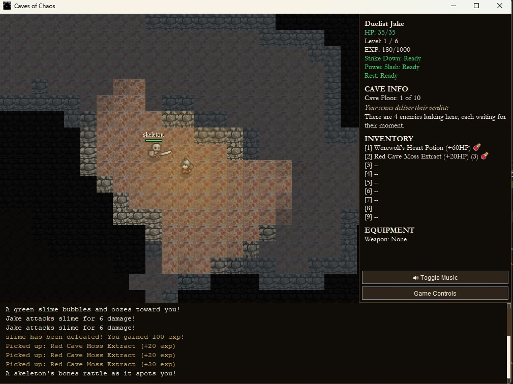

{kind=link}

Dungeon View
Grid‑based cave map with custom tiles

Grid‑based cave map with custom tiles

Manage gear and consumables

Fight slimes, goblins, werewolves, and more
Caves of Chaos is a Java roguelike RPG where you explore a dark cave and fight increasingly difficult enemies, collect loot, avoid traps and prepare for the final boss encounter. The objective is to survive the caves and defeat the Medusa of Chaos in order to collect the Shard of Judgement. You can play either as a Wizard or Duelist, each with unique items and strategies. You need to manage your health, cooldowns, and inventory as you progress through the caves.
Class Choice: Start as either a Wizard (ranged spellcaster) or a Duelist (melee fighter with balanced combat abilities). The spells are designed to be more powerful but have longer cooldowns and require enough mana, while the duelist's abilities are more consistent and have shorter cooldowns. Each attack is luck based, with damage calculated using a random factor to add unpredictability to combat.
Procedural Caves: Each level is generated with cellular automata, creating a fresh cave layout in every run and improving replayability. The player can move between levels without problems, and the game state is preserved across transitions, allowing for strategic retreats and exploration.
Fog of War: Only tiles within the player's line of sight are visible, adding tension and encouraging cautious exploration. Enemies can be hidden in the fog, so players must be prepared for surprise encounters. Traps are indistinguisable from possible loot, adding an extra layer of danger to exploration.
Enemy AI: Enemies move randomly when the player is out of sight, but will actively pursue the player when detected, creating dynamic and engaging combat encounters.
Boss Progression: The Medusa of Chaos keeps persistent health across transitions, so each encounter contributes to the final victory. The boss is designed to be a challenging endgame encounter that requires careful resource management and strategic use of abilities to defeat.
Requirement: Java 24 or higher.
Quick Play (Windows): compile and run with defaults (Wizard, Player1).
run.batrun.bat wizard Gandalf
run.bat duelist Conanbuild-jar.bat
java -jar dist/CavesOfChaos.jar wizard PlayerNamejava -jar dist/CavesOfChaos.jar wizard Gandalf
java -jar dist/CavesOfChaos.jar duelist Conan